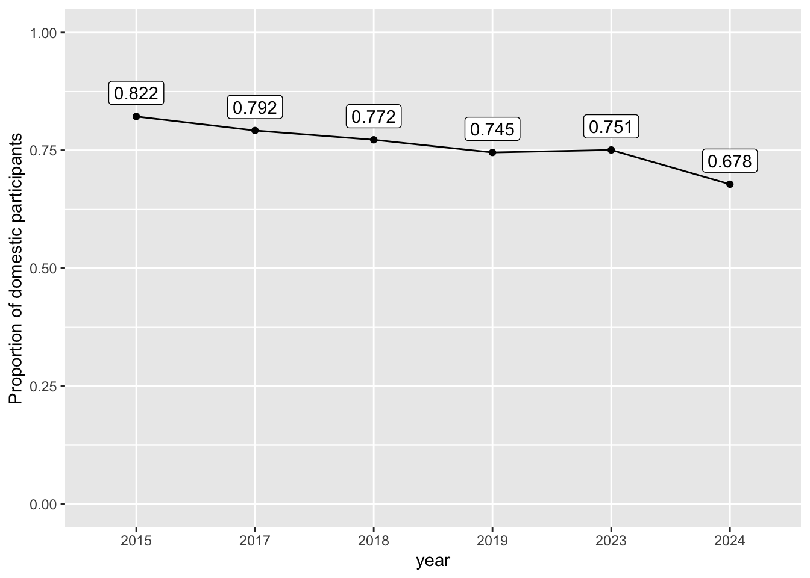

years <- c("2015", "2017", "2018", "2019", "2023", "2024")
files <- paste0("boston", years, ".csv")
raw <- map(files, ~here::here("data-raw", .x) |> map(read_csv)) |> bind_rows()
# god bless there is no same acronym for US and CA states
us_state <- c("DC", state.abb)
ca_state <- c("AB", "BC", "MB", "NB", "NL", "NS", "NT", "NU", "ON", "PE", "QC", "SK", "YT")
boston <- raw |>
mutate(location = ifelse(str_detect(location, "\\?"), NA, location)) |>
separate(location, sep = ", ", into = c("city", "state")) |>
mutate(
state = str_to_upper(state),
# clena up (select Country) in loc when state info is there but city info is not
city = ifelse(str_detect(city, "Country"), NA, city),
state = ifelse(state == "D.C.", "DC", state),
# TODO there are more clearning needed here
#state = ifelse(!state %in% c(us_state, ca_state), NA, state),
country = ifelse(state %in% us_state, "domestic", "international"),
year = as.factor(year(race_date))
)Exploratory data analysis on the marathon data
Read in and clean data
Domestic vs. International
The proportion of international participants are increasing, but for the years we have (2015, 2017, 2018, 2019, 2023, 2024) roughtly 70% vs. 30% (20,000 vs. 5,000) domestic vs. international participants
Across all years:
boston |> count(country) |> mutate(prop = n/ sum(n))# A tibble: 2 × 3
country n prop
<chr> <int> <dbl>
1 domestic 119781 0.760
2 international 37748 0.240For each individual year:
dom_int_df <- boston |>
group_by(year, country) |>
summarise(n = n(), .groups = "drop") |>
pivot_wider(names_from = country, values_from = n) |>
mutate(dom_prop = domestic/(domestic + international))
dom_int_df |>
ggplot(aes(x = year, y = dom_prop, group = 1)) +
geom_point() +
geom_label(aes(y = dom_prop + 0.05, label = round(dom_prop, 3))) +
geom_line() +
ylim(0, 1) +
ylab("Proportion of domestic participants") 
About 500-1000 participants from ON and QC, Canada, each year, need to check if we have flights to/from Canada and whether this number will make an impact
boston |> filter(state %in% ca_state) |> count(year, state) |> filter(n > 300)# A tibble: 12 × 3
year state n
<fct> <chr> <int>
1 2015 ON 982
2 2015 QC 532
3 2017 ON 820
4 2017 QC 467
5 2018 ON 749
6 2018 QC 482
7 2019 ON 711
8 2019 QC 408
9 2023 ON 706
10 2023 QC 303
11 2024 ON 583
12 2024 QC 420Among US states
The number of participants from each states doesn’t seem to be changing much over the years. Here is a summary of the states:
| Category | States (# of participants in 2024) |
|---|---|
| Staes that are too close to Boston and likely to have a humoungus confounding from other means of transportation and international flight | MA (3907) NY (1321) NJ (508) |
| States are likely to use flight as the primary commute - but we need to see whether the participants would make a difference on the flight | CA (1640) TX (844) FL (559) CO (496) WA (415) UT (326) |
| Other state that are likley to commute by flight, but I suspect the count would be too low to make an impact | OR(217) AZ (186) |
| States I’m not sure | IL (598) PA (573) OH (516) |
dom_boston <- boston |> filter(country == "domestic")
state_count_df <- dom_boston |> count(year, state, sort = TRUE)
# state_count_df |>
# ggplot(aes(x = year, y = n, group = state)) +
# geom_line() +
# coord_trans(y = "sqrt")
usa_map <- st_as_sf(maps::map("state", fill=TRUE, plot =FALSE)) |>
mutate(ID = str_to_title(ID)) |>
left_join(tibble(ID = state.name, state = state.abb), by = "ID") |>
left_join(state_count_df)
ggplot(usa_map) +
geom_sf(aes(fill = n), color = "#2b2b2b", size=0.125) +
coord_sf(crs = st_crs("+proj=laea +lat_0=45 +lon_0=-100 +x_0=0 +y_0=0 +a=6370997 +b=6370997 +units=m +no_defs"), datum = NA) +
ggthemes::theme_map()This doesn’t look good, for states that are far away from Boston, only about/ less than 100 people from each city/state participate in the marathon - we might not be able to see an effect on changes of flight behavior:
boston2024 <- boston |> filter(year == "2024")
map_dfr(c("CA", "TX", "FL", "CO", "WA", "UT"),
~boston2024 |>
filter(state == .x) |>
count(city, state, sort = TRUE) |>
group_by(state) |> head(2))# A tibble: 12 × 3
# Groups: state [6]
city state n
<chr> <chr> <int>
1 San Francisco CA 161
2 San Diego CA 120
3 Houston TX 145
4 Austin TX 118
5 Miami FL 50
6 Tampa FL 33
7 Denver CO 107
8 Boulder CO 57
9 Seattle WA 139
10 Spokane WA 17
11 Salt Lake City UT 37
12 Provo UT 18